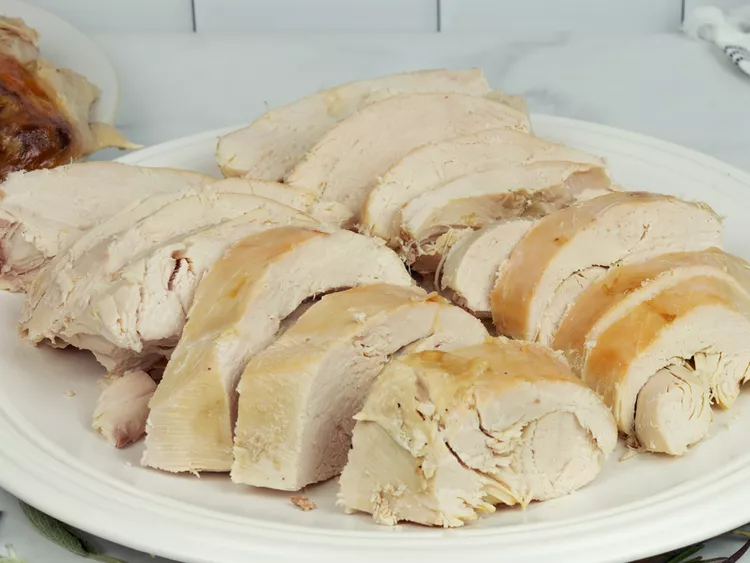

Turkey

TCooking turkey in a bag is easy with this recipe.
Your Thanksgiving turkey will be perfectly moist when done,
and you can make gravy out of the juice that forms in
the bottom of the bag. Plus, cleanup is a snap! The cooking
time will vary if your turkey is larger or smaller than 12 pounds.
Ingredients
- 1 (12 pound) whole turkey
- salt and ground black pepper to taste
- 2 tablespoons all-purpose flour
- 5 stalks celery, cut into 1-inch pieces
- 2 large onions, quartered
- 1 large turkey bag
Steps
- Preheat the oven to 350 degrees F (175 degrees C).
- Remove and discard giblets. Rinse turkey and pat dry; season with salt and pepper.
- Sprinkle the bottom of the turkey bag with flour; place turkey in the bag and add celery and onions. Seal the bag and transfer into a roasting pan; poke several holes in the bag with a fork.
- Bake in the preheated oven until turkey is cooked and the juices run clear, about 3 to 3 1/2 hours. An instant-read thermometer inserted into the thigh meat should read 180 degrees F (85 degrees C).